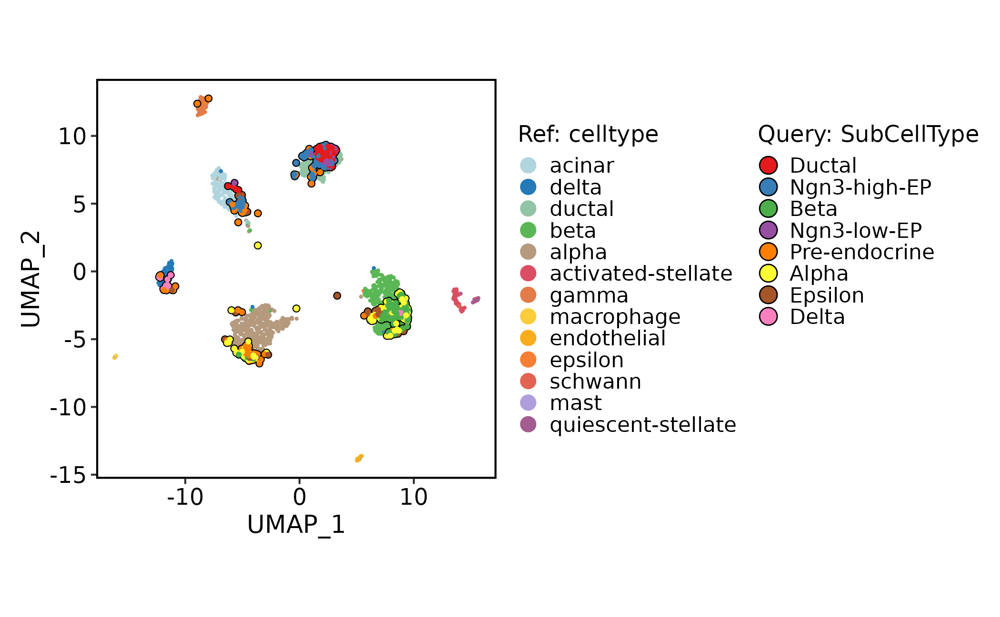
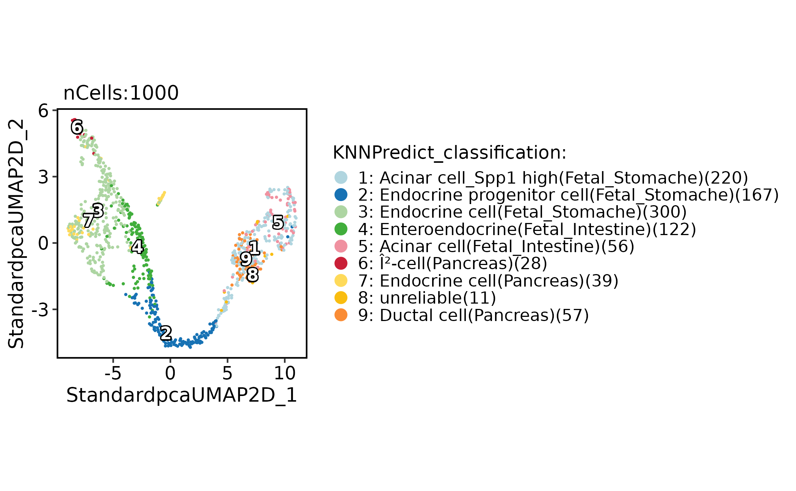
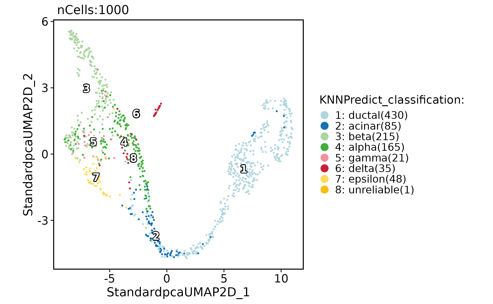
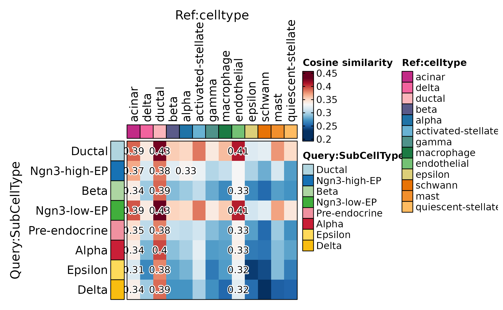

Cell annotation workflow
Source:vignettes/cell-annotation-workflow.Rmd
cell-annotation-workflow.RmdThis article shows how to annotate query cells in scop
using reference single-cell data, bulk-like reference profiles, and
correlation-based summaries. The goal is to make annotation evidence
explicit instead of treating transferred labels as final truth.
Use this workflow after the query object has passed basic preprocessing and quality control.
Annotation in this article means evidence-backed label assignment. Projection, nearest-neighbor prediction, and correlation heatmaps answer related but different questions, so the transferred label should not be treated as final until it agrees with marker expression and expected biology.
Prepare Query and Reference Objects
The query is the bundled mouse pancreas subset. The reference is the
bundled human pancreas integration subset, which has a
celltype annotation and an integrated embedding.
library(scop)
#> ⬢ . ⬡ ⬢ .
#> _____ _________ ____
#> / ___// ___/ __ ./ __ .
#> (__ )/ /__/ /_/ / /_/ /
#> /____/ .___/.____/ .___/
#> /_/
#> ⬢ . ⬡ . ⬢
#> ------------------------------------------------------------
#> Version: 0.9.0 (2026-08-02 update)
#> Website: https://mengxu98.github.io/scop/
#>
#> Python environment initialization is disabled
#> To enable it, set: options(scop_env_init = TRUE)
#>
#> The message can be suppressed by:
#> suppressPackageStartupMessages(library(scop))
#> or options(log_message.verbose = FALSE)
#> ------------------------------------------------------------
data(pancreas_sub)
data(panc8_sub)
pancreas_sub <- RunStandardWorkflow(pancreas_sub, verbose = FALSE)
#> ℹ [2026-08-02 13:40:48] Skip `log1p()` because `layer = data` is not "counts"
panc8_sub <- RunIntegration(
srt_merge = panc8_sub,
batch = "tech",
integration_methods = "Harmony"
)
#> ◌ [2026-08-02 13:40:51] Run integration workflow...
#> ℹ [2026-08-02 13:40:51] Split `srt_merge` into `srt_list` by "tech"
#> ℹ [2026-08-02 13:40:52] Checking a list of <Seurat>...
#> ! [2026-08-02 13:40:52] Data 1/5 of the `srt_list` is "unknown"
#> ℹ [2026-08-02 13:40:52] Perform `NormalizeData()` with `normalization.method = 'LogNormalize'` on 1/5 of `srt_list`...
#> ℹ [2026-08-02 13:40:52] Perform `FindVariableFeatures()` on 1/5 of `srt_list`...
#> ! [2026-08-02 13:40:52] Data 2/5 of the `srt_list` is "unknown"
#> ℹ [2026-08-02 13:40:52] Perform `NormalizeData()` with `normalization.method = 'LogNormalize'` on 2/5 of `srt_list`...
#> ℹ [2026-08-02 13:40:52] Perform `FindVariableFeatures()` on 2/5 of `srt_list`...
#> ! [2026-08-02 13:40:53] Data 3/5 of the `srt_list` is "unknown"
#> ℹ [2026-08-02 13:40:53] Perform `NormalizeData()` with `normalization.method = 'LogNormalize'` on 3/5 of `srt_list`...
#> ℹ [2026-08-02 13:40:53] Perform `FindVariableFeatures()` on 3/5 of `srt_list`...
#> ! [2026-08-02 13:40:53] Data 4/5 of the `srt_list` is "unknown"
#> ℹ [2026-08-02 13:40:53] Perform `NormalizeData()` with `normalization.method = 'LogNormalize'` on 4/5 of `srt_list`...
#> ℹ [2026-08-02 13:40:53] Perform `FindVariableFeatures()` on 4/5 of `srt_list`...
#> ! [2026-08-02 13:40:53] Data 5/5 of the `srt_list` is "unknown"
#> ℹ [2026-08-02 13:40:53] Perform `NormalizeData()` with `normalization.method = 'LogNormalize'` on 5/5 of `srt_list`...
#> ℹ [2026-08-02 13:40:53] Perform `FindVariableFeatures()` on 5/5 of `srt_list`...
#> ℹ [2026-08-02 13:40:54] Use the separate HVF from `srt_list`
#> ℹ [2026-08-02 13:40:54] Number of available HVF: 2000
#> ℹ [2026-08-02 13:40:54] Finished check
#> Warning: No layers found matching search pattern provided
#> Warning: Layer 'scale.data' is empty
#> ℹ [2026-08-02 13:40:58] Perform `Seurat::ScaleData()`
#> ℹ [2026-08-02 13:41:00] Perform linear dimension reduction("pca")
#> ℹ [2026-08-02 13:41:00] Perform Harmony integration
#> ℹ [2026-08-02 13:41:00] Using "Harmonypca" (1:20) as input
#> ℹ [2026-08-02 13:41:01] Adjust neighbor k from 20 to 20 for small-sample clustering
#> ℹ [2026-08-02 13:41:01] Perform `Seurat::FindClusters()` with "louvain"
#> ℹ [2026-08-02 13:41:01] Reorder clusters...
#> ℹ [2026-08-02 13:41:01] Skip `log1p()` because `layer = data` is not "counts"
#> ℹ [2026-08-02 13:41:01] Perform umap nonlinear dimension reduction using Harmony (1:20)
#> ℹ [2026-08-02 13:41:04] Perform umap nonlinear dimension reduction using Harmony (1:20)
#> ℹ [2026-08-02 13:41:07] Perform umap nonlinear dimension reduction using Harmonypca (1:20)
#> ✔ [2026-08-02 13:41:10] Harmony integration completedWhen query and reference use different gene-name conventions, standardize names before mapping. Keep the name conversion explicit so that annotation results can be traced later. The example converts human reference symbols into a mouse-like capitalization style because the query object is mouse. In real analyses, use the species and ortholog mapping appropriate for the experiment rather than relying on simple capitalization.
genenames <- make.unique(
thisutils::capitalize(
rownames(panc8_sub[["RNA"]]),
force_tolower = TRUE
)
)
names(genenames) <- rownames(panc8_sub)
panc8_rename <- RenameFeatures(
panc8_sub,
newnames = genenames,
assays = "RNA"
)
#> ℹ [2026-08-02 13:41:10] Rename features for the assay: RNAProject Query Cells Onto a Reference
Use projection when the reference has a trusted embedding and you want to see where query cells land in that reference coordinate system.
srt_query <- RunKNNMap(
srt_query = pancreas_sub,
srt_ref = panc8_rename,
ref_umap = "HarmonyUMAP2D"
)
#> ℹ [2026-08-02 13:41:10] Use the features to calculate distance metric
#> ℹ [2026-08-02 13:41:11] Data type is log-normalized
#> ℹ [2026-08-02 13:41:11] Data type is log-normalized
#> ℹ [2026-08-02 13:41:11] Use 632 features to calculate distance
#> ℹ [2026-08-02 13:41:11] Use raw method to find neighbors
#> ℹ [2026-08-02 13:41:12] Running UMAP projection
ProjectionPlot(
srt_query = srt_query,
srt_ref = panc8_rename,
query_group = "SubCellType",
ref_group = "celltype",
ref_param = list(
xlab = "UMAP_1",
ylab = "UMAP_2"
)
)
#> Scale for x is already present.
#> Adding another scale for x, which will replace the existing scale.
#> Scale for y is already present.
#> Adding another scale for y, which will replace the existing scale.
#> Warning: Removed 4 rows containing missing values or values outside the scale range
#> (`geom_point()`).
#> Removed 4 rows containing missing values or values outside the scale range
#> (`geom_point()`).
Projection is evidence for similarity, not a replacement for marker validation. Use it together with marker plots and group-level summaries. Cells landing near a reference group indicate transcriptional similarity in the reference embedding. They do not prove identity when the reference lacks the state, contains batch effects, or uses a broader label vocabulary than the query.
Predict Labels From a Bulk-Like Reference
Use RunKNNPredict() with a bulk-like reference when
reference profiles are available but not individual reference cells.
data(ref_scMCA)
pancreas_sub <- RunKNNPredict(
srt_query = pancreas_sub,
bulk_ref = ref_scMCA,
filter_lowfreq = 20
)
#> ℹ [2026-08-02 13:41:14] Use [1] 549 features to calculate distance.
#> ℹ [2026-08-02 13:41:14] Detected query data type: "log_normalized_counts"
#> ℹ [2026-08-02 13:41:14] Detected reference data type: "log_normalized_counts"
#> ℹ [2026-08-02 13:41:14] Calculate similarity...
#> ℹ [2026-08-02 13:41:14] Use raw method to find neighbors
#> ℹ [2026-08-02 13:41:15] Predict cell type...
CellDimPlot(
pancreas_sub,
group.by = "KNNPredict_classification",
reduction = "UMAP",
label = TRUE
)
Bulk-like references are useful for broad labels. They are less
reliable for substates that depend on local single-cell neighborhoods.
The KNNPredict_classification column is therefore best read
as a suggested label source. Keep it separate from curated annotations
until discordant groups have been reviewed.
Predict Labels From a Single-Cell Reference
Use a single-cell reference when the reference annotation and query biology are close enough for nearest-neighbor transfer.
pancreas_sub <- RunKNNPredict(
srt_query = pancreas_sub,
srt_ref = panc8_rename,
ref_group = "celltype",
filter_lowfreq = 20
)
#> ℹ [2026-08-02 13:41:15] Use the HVF to calculate distance metric
#> ℹ [2026-08-02 13:41:15] Use [1] 632 features to calculate distance.
#> As of Seurat v5, we recommend using AggregateExpression to perform pseudo-bulk analysis.
#> ℹ [2026-08-02 13:41:15] Detected query data type: "log_normalized_counts"
#>
#> ℹ [2026-08-02 13:41:15] Detected reference data type: "log_normalized_counts"
#>
#> ℹ [2026-08-02 13:41:15] Calculate similarity...
#>
#> ℹ [2026-08-02 13:41:15] Use raw method to find neighbors
#>
#> ℹ [2026-08-02 13:41:15] Predict cell type...
#>
#> This message is displayed once per session.
CellDimPlot(
pancreas_sub,
group.by = "KNNPredict_classification",
reduction = "UMAP",
label = TRUE
)
Check group-level similarity before accepting labels. A correlation heatmap can show whether query labels map cleanly to expected reference labels or split across several alternatives. Rows in this heatmap are query groups and columns are reference groups. High correlation to one reference label supports a clear annotation; similar correlation to multiple labels flags ambiguity.
ht <- CellCorHeatmap(
srt_query = pancreas_sub,
srt_ref = panc8_rename,
query_group = "SubCellType",
ref_group = "celltype",
nlabel = 3,
label_by = "row",
show_row_names = TRUE,
show_column_names = TRUE
)
#> ℹ [2026-08-02 13:41:16] Use the HVF to calculate distance metric
#> ℹ [2026-08-02 13:41:16] Use [1] 632 features to calculate distance.
#> ℹ [2026-08-02 13:41:16] Detected query data type: "log_normalized_counts"
#> ℹ [2026-08-02 13:41:16] Detected reference data type: "log_normalized_counts"
#> ℹ [2026-08-02 13:41:16] Calculate similarity...
#> ℹ [2026-08-02 13:41:16] Use raw method to find neighbors
#> ℹ [2026-08-02 13:41:16] Predict cell type...
print(ht$plot)
What to Report
A compact annotation report should include:
- the query object, reference object, and gene-name conversion strategy;
- the reference label column and embedding used for projection;
- whether labels came from bulk-like profiles or single-cell neighbors;
- filtering thresholds such as
filter_lowfreq; - projection plots, predicted label plots, and marker-gene checks;
- ambiguous groups where several labels have similar support.
Treat annotation as an evidence layer. Keep transferred labels separate from manual labels until marker genes and biological context support the assignment.